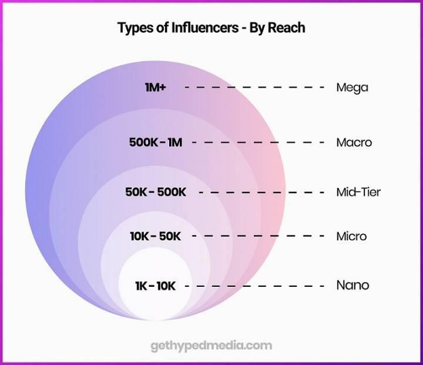

As the world around us focuses more and more on digital matters, brands have been changing how they market themselves to cope with the digital world. Influencer marketing has become more effective than ever because of how social media, cameras, and editing software have changed.
Traditional marketing on TV or radio is losing ground to social media marketing because people have more freedom to create and view content on the latter platform.
Social media is easy to use, which means it allows brands to reach more people. But audiences are spread out across different social media platforms and more brands are joining, making the market very crowded. However, influencer marketing gives brands a more direct and personalized way to get in front of a targeted audience.
Influencer marketing together with influencer marketing strategies, and other important information regarding this type of marketing, will be covered in this article. By the end of this post, you’ll be convinced why influencer marketing works and how you should do it.
Read on to learn more about why influencer marketing works in 2022.
How Does Influencer Marketing Work?
Influencer marketing is a kind of social media marketing that relies on endorsements and product mentions from influencers or people with a large social media following who are recognized as experts in their field.
So, influencer marketing is a type of advertising where people with lots of followers on social networks help promote a brand.
When you use influencer marketing, you can do things like:
-
Bring more attention to a brand
-
Gain the trust of consumers
-
Gather more leads
-
Get feedback
What Types Of Influencers Are There?

There are five main types of influencers:
-
Nano-influencers (less than 10K followers)
-
Micro-influencers (10K-50K followers)
-
Mid-Tier influencers (50K-100k followers)
-
Macro-influencers (100k-1M)
-
Mega-influencers or celebrities (1M+ Followers)
The main element that makes influencer marketing a good idea is that Influencers are great at creating new content. You can run a campaign in a very creative and unique way with their help. Let's look at how this kind of advertising works and why it does.
People don't trust ads anymore, but they do trust social media influencers. Influencers could be the next "golden goose" for marketing. They trust a voice of authority, to be more exact. But brands should be cautious about who they choose as influencers and how authentic the message is. Otherwise, your "influencer marketing" might start to look like traditional advertising or paid promotion. One thing is for sure: influencer marketing is taking off, whether we like it or not.

Reasons Why Influencer Marketing Is Effective In 2022
1. Partnerships With Influencers Generates More Sales
Influencer marketing takes advantage of well-known figures' endorsements and product mentions. This group of people has built a large following on social media and is regarded as an expert in their field or specialty.
This form of marketing is effective because consumers trust the social media influencers they follow. Businesses can reach more prospective customers and followers from the endorsements of these influential individuals resulting in more sales.
During the pandemic, a drastic increase in social media usage happened. There was an increase in the number of followers for influencers who already had large followings. As a result, companies were compelled to collaborate with them to get to their target audience.
2. High Engagement Of Micro-Influencers
Bigger is always better, as the saying goes. For influencer marketing though, things are rather different. Influencers with a higher number of followers (over ten thousand) could seem like a better choice for your company's influencer marketing approach. However, this isn't the case.
A company or brand's greatest results can come from micro-influencers, those with less than fifty thousand followers on social media. This is because they can generate more clicks, engagement, and a larger return on investment. Influencers with large followings frequently have low levels of engagement. Consequently, with a small following, the level of engagement is higher, which companies want.
Brands and products don't need more followers if those followers cannot be converted into sales. Increasing sales is the ultimate goal, and micro-influencers are the most effective way to do it.
3. People See Influencers As Friends
People see influencers as their friends rather than celebrities. Compared to celebrities, influencers tend to have extremely high loyalty amongst their audience in a specific niche.
It’s for this reason you might see brands using influencer content for whitelisting or dark posting since this allows for them to leverage the influencer’s likeness in their advertisements. When consumers see their favorite influencer in an advertisement, they are more likely to make a buying decision.
However, to get the most out of the opportunity, you must establish your objectives and goals and create a budget. When it comes to keeping everything organized, you’re best off creating an influencer campaign brief that contains all the information about the campaign, this will keep things organized. To find suitable influencers, you can leverage influencer search tools and narrow down influencers by niche and platform depending on what your objectives are.
On top of this, you can have an influencer contract in place that specifies the terms and conditions surrounding the content that will be produced through the collaboration.
4. Consumers Prefer Influencers Over Traditional Advertising
A click-through rate of fewer than one in a thousand is considered ineffective banner advertising. Because people are sick of commercials, this should come as no surprise, right? Approximately 5,000 advertisements are shown to us each day in the United States. The vast majority of us ignore them, preferring to stream our media and purchase goods without them.
Using influencer marketing is both more effective and more quantifiable than traditional advertising. Influencer marketing has been demonstrated to generate higher ROI than any other kind of digital advertising, according to recent studies. You have to spend money to produce high-quality content before you can distribute it, and influencer marketing addresses that issue organically and cost-effectively.
5. Influencer Marketing Increases Brand Awareness
Your brand's social media presence is no longer a luxury; it's a necessity. Customers use social media to communicate with each other, and they also use it to do research before making a purchase. They learn about new goods and services by discussing them with others on social media, both good and negative.
However, businesses that want to remain competitive must use social media as a platform to interact with their customers rather than merely broadcast messages to them. When it comes to using social media to enlighten, amuse, and entice customers, no one does it better than influencers. It's the best option for most companies to acquire the organic access to followers and engagement they need by partnering with the proper influencers. It is the future of business growth.
6. Trends Are Set By Influencers
Influencers don't merely discuss or report on trends; they also create them. They determine what things are likely to be popular in the near future. In the end, consumers buy what they like.
Using your products and availing your services in a social and cultural context becomes a part of the daily routine if the correct business influencers publish images of themselves doing so.
It is pretty amazing how influencers impact businesses with just a post or a short clip. For example, when Cristiano Ronaldo put Coca-Cola away to his side, Coca-Cola's stocks drastically lowered since his loyal followers also did not want to buy the product anymore.
Instagram influencers are using IG reels and Instagram posts to provide short but fun advertisements for Instagram users to watch. As one of their marketing efforts, they reach out to their potential customers using proper hashtags and catchy brand messages. This marketing tactic has proven to generate new audiences for businesses.
7. Influencer Marketing Appears Natural
Unlike conventional advertising, native advertising doesn't disrupt the user's experience, allowing companies to appear naturally inside the environment. More than two-thirds of internet users prefer influencer content advertising over conventional forms of advertising. Influencers provide the utmost in native advertising by demonstrating how a product is utilized or by expressing their own ideas on why something is superior.
For example, if you’re a business that sells fitness supplements, you can easily integrate into the content of a fitness influencer without making the content feel forced. When you compare this to traditional advertising methods, such as paid ads, it comes off as a more natural method of advertising your product.
8. SEO Benefits of Influencer Marketing
It's a given that influencer marketing will boost your search engine rankings. When searching for the world's most popular companies, a big percentage of all results come from user-generated social posts. More social media users mention your brand, which makes your brand more relevant and popular in Google search results.
SEO is important to make your business platform more feasible for the people. For example, MedicalAlertBuyersGuide and Unscramblex use SEO blogs to rank on top of Google searches. This way, people will be able to find their website instead of other websites.
9. Influencers Use New Features
Influencers can use features like live shopping to their advantage and increase engagement on their stories. In 2021, Facebook started live shopping, while Amazon and Pinterest also offer comparable tools for live purchases.
Live shopping in the United States generated $1 billion in revenue in 2019, and that figure is expected to rise in the coming years. A rise of 830% in only four years will bring worldwide sales to $500 billion in 2023.
10. Growing Creator Economy
Since there are more creators and influencers than ever before, it's easier to locate the ideal influencers for your company.
Millions of individuals will identify themselves as online producers by 2022. That figure is expected to rise to 1 billion in the following years. It's simple to extend your audience thanks to TikTok's democratized algorithm. In 2022, brands will likely fail if they don’t take advantage of influencer marketing's rapid progress.
We're also seeing influencers emerge in every niche imaginable because of this. For example, while NFT's may be a new topic, there are tons of NFT influencers who have created large audiences in the space.
What Influencer Marketing Strategies Are Available To Businesses?
Influencer marketing can be used in a variety of ways. Here are some of the most popular and effective marketing options:
I. Video Content
Video content is becoming increasingly popular when it comes to influencer marketing. We can attribute this boom in the popularity of video content to short-video platforms like TikTok. In fact, our most recent influencer marketing report shows that TikTok captured 46% of influencer marketing budgets last year, which is impressive considering how young the platform is.
Influencers are also great editors, since they’re used to creating content and they understand how to leverage effects and video pop-ups to boost engagement.
II. Sponsored Post
One of the most common methods of leveraging influencers is by having them create sponsored posts on their social media.
For example, if you’re looking to work with a food influencer on TikTok, you can buy a shoutout and they will create a piece of content specifically for you and your product.
III. Social Proof
An influencer’s comment on one brand can have a huge impact on the business. Loyal followers will immediately change their views about that particular brand depending on the comment of influencers.
Social proof is important because it tells customers about the quality of the product. For example, KURU footwear always displays feedback on its platform to entice more customers to buy from them.
IV. Facebook, Tiktok, And Instagram Story
Consistent stories are one of the most effective marketing strategies. Since influencers can build personal social interactions with their followers, they are more trustworthy. Links, Q&As, and live streaming can all be included in a single story.
V. Unboxing
Make a product or service available to your influencer so that they can test it out in front of their followers on video. You can use an unboxing-like tactic even if you don't have a physical product since content creators can take screenshots and comment about your web-based offerings. Another option is to let customers try on clothing or other wearables (instead of requiring them to do so themselves).
VI. Hyperlocal Influencing
Hyperlocal marketing focuses on a particular geographic area and the people who live there. During COVID-19, a large number of hyperlocal influencers teamed up with companies. The hyperlocal successful influencer provides a big impact when it comes to message and tone.
VII. Live Selling
One of the benefits of eCommerce is that influencers can provide their followers with immediate access to live links and commerce experiences. Your company will get more leads if you use this marketing funnel strategy.
VII. Influencer-Led Production
Ads for podcasts often include presenters having a casual discussion and sometimes making a little grammatical error. This is because it is more relatable, and the same holds true for influencer-led social media content that gives feedback on products as social proof.
IX. Employee Influencers
It's possible for your staff to become brand advocates just like V. Spehar, who hosted the LA Times TikTok story in a morning show-style production.
X. Virtual Experience
As we approach Web 3.0 and the metaverse, virtual experiences will play a larger role in our digital lives, making them increasingly important. The annual TikTok-sponsored conference on influencer marketing is all virtual. Lil Miquela, the virtual reality influencer who swept the internet in 2018, is all you need to remember to confirm that this is true. With 3.1 million followers, her social media presence is still going strong.
XI. Joint Influencer Posts
In 2022, businesses will be able to harness influencers by posting collaborative content with them. This gives them the opportunity to collaborate with an influencer on a piece of content.
XII. Affiliate Marketing
Brand ambassadors are content creators who get a cut of every sale of a product made through a customized link from the influencer. Most of the time, a big part of brand ambassadorships is affiliate marketing. Influencers can get products at a discount, and they can also make money by selling those products.
Influencer Marketing Helps You Expand Your Online Presence
So far, we've talked about why influencer marketing campaigns will help you increase your internet presence, drive traffic to your website, and even get a variety of engaging content that you can share on your own social media feeds.
It's unlikely that you'll be able to build a strong online following without at least one social media channel. Some of the most common ways to measure the return on investment (ROI) of influencer marketing campaigns are getting more followers and having more people talk about your brand on different social media platforms. So, if you want to do well with influencer campaigns, you need to be present on social media.
Influencer marketing is without a doubt one of the best ways to market your business right now. In fact, a lot of experts will say that it's the best way to market.
It's hard to find brands that don't use it anymore. It's a strong marketing strategy that lets you reach your target audience in a way that feels real and genuine.
Social media influencers use their online popularity on different platforms to work with brands they like and make content that changes how people think about those brands.
Conclusion
Word-of-mouth is how people learn about a new product and influencers are the best for this criteria. Undoubtedly, influencer marketing campaigns are effective in increasing the purchasing decisions of their target market.
So, how to find and contact the right influencer for your business?
There are essential criteria you need to focus on. First, you have to look for the niche of the influencer. You must go for the influencer who is an expert in your niche. This way, you will align your goals and objectives with the influencer.
Next, identify your audience. Find influencers who reach the people you want to reach. Choose the right marketing channels to focus on. Be unique and authentic. Giving influencers creative control shows that you believe in their personal brand strategy.
Generate good influencer outreach email templates to ensure a guaranteed response from the. You should also try finding different influencers from various influencer marketing platforms in seconds through the Collabstr platform and start building your brand for the public.